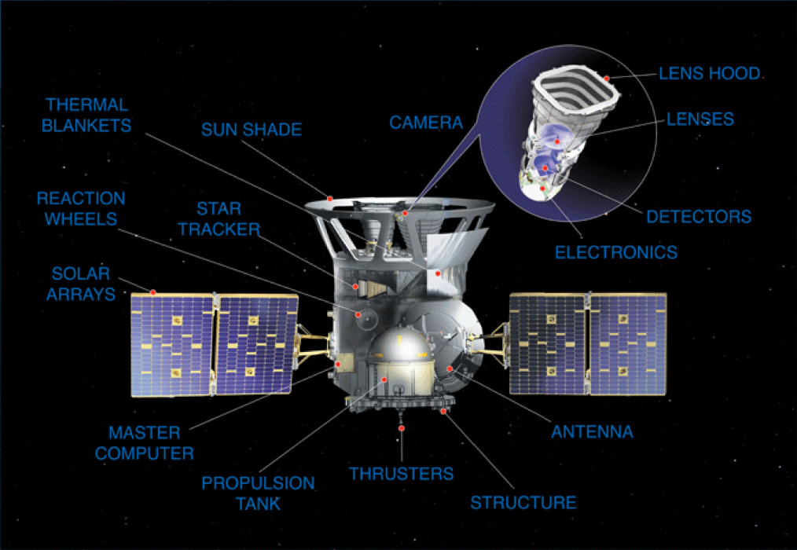

Astrophysique · Programmation scientifique
« Black Hole Hunters »
Bibliothèque Python pour l'analyse automatisée des courbes de lumière de Kepler et TESS
Six classes Python, un sens de données. Les courbes brutes de la NASA entrent dans AstroFetcher et ressortent sous forme d'événements classifiés depuis AstroPlotter : transits d'exoplanètes, éruptions stellaires, candidats microlentilles gravitationnelles. Projet de session en équipe de trois, cours MGA 802, ÉTS, été 2026.

Le problème
Kepler a mesuré la luminosité de 530 000 étoiles entre 2009 et 2018. TESS en mesure 400 000 autres depuis 2018 [Borucki et al. 2010 ; Ricker et al. 2015]. Ces deux missions produisent des dizaines de téraoctets de courbes de lumière : la brillance d'une étoile, point par point, sur des mois ou des années. Trois types d'événements se cachent dans ce flux de données.
Les transits d'exoplanètes. Quand une planète passe devant son étoile, elle bloque entre 0,01 % (planète rocheuse) et 1 % (Jupiter chaud) de son flux lumineux pendant quelques heures. La signature est un creux symétrique et périodique.
Les éruptions stellaires. Une explosion magnétique libère de l'énergie en quelques minutes puis décroît exponentiellement sur plusieurs heures. La montée abrupte suivie d'une longue traîne la distingue des autres événements [Feinstein et al. 2025].
La microlentille gravitationnelle. Un objet massif passe entre l'observateur et l'étoile cible. Sa gravité courbe et amplifie temporairement la lumière selon le profil de Paczyński [Paczyński 1986]. C'est la seule méthode photométrique qui détecte des trous noirs isolés sans qu'ils émettent de lumière.
Planet Hunters (Zooniverse) a prouvé que des bénévoles repèrent des événements que les algorithmes classiques ratent. À une courbe par minute par personne, inspecter manuellement les 930 000 étoiles des deux missions demanderait des milliers d'années-bénévoles. D'où l'automatisation.
<img src="assets/img/black-hole-hunters/probleme.png" alt="...">
Architecture
Six classes, un sens de lecture. Chaque classe reçoit la sortie de la précédente et n'y touche plus.

J'ai conçu et codé AstroFetcher et SignalCleaner, les deux premiers maillons. Jules a pris AnomalyDetector et AnomalyClassifier. Alexandre a construit AstroPlotter et le script d'orchestration main.py.
Ce que j'ai codé
AstroFetcher interroge l'archive MAST de la NASA via lightkurve [Lightkurve Collaboration 2018]. Sa méthode download_data essaie d'abord la mission demandée (Kepler ou TESS), puis bascule vers l'autre si l'étoile n'y figure pas. Un second chargement via load_local_csv lit des données Kaggle pour travailler hors-ligne. L'appelant reçoit un DataFrame propre dans les deux cas sans avoir à gérer la source.
SignalCleaner nettoie la courbe brute en trois étapes.
D'abord, la règle des 5σ. Pour une distribution gaussienne, la probabilité qu'un point réel dépasse cinq écarts-types est inférieure à 6×10⁻⁷. Tout point au-delà de ce seuil est un artefact instrumental (rayon cosmique, saturation du CCD, corruption de données) et on le supprime.
Ensuite, la normalisation par la médiane. On divise chaque mesure de flux par la médiane de l'ensemble de la courbe. Un flare qui monte le flux à 150 % pendant une heure ne déplace presque pas la médiane sur 90 jours d'observations. La moyenne, elle, serait biaisée vers le haut. Après normalisation, deux étoiles de luminosités très différentes produisent des courbes directement comparables.
Enfin, on n'utilise pas la méthode flatten() de lightkurve. Elle ajuste et soustrait une tendance sur 401 points, ce qui efface au passage les creux de transit qu'on cherche à détecter.


Résultats — TrES-2b
TrES-2b est un Jupiter chaud découvert en 2006 par le Trans-atlantic Exoplanet Survey. Elle orbite l'étoile GSC 03549-02811 à 702 années-lumière dans la constellation du Dragon, bouclant un tour complet en 2,471 jours. Sa masse atteint 1,49 masses joviennes pour 1,36 rayons joviens. Sa surface dépasse 1 500 K. Son albédo géométrique est inférieur à 0,01, moins réfléchissant que du charbon. C'est la planète la plus sombre jamais découverte [Kipping & Spiegel 2011].

Ce que notre pipeline détecte. Sur la fenêtre d'observation BKJD 121–130, AnomalyDetector isole 3 creux de flux à 99 % de confiance. La méthode rolling-window baseline departure calcule un résidu local à chaque pas de temps. Les trois creux dépassent le seuil à 1σ de façon symétrique et périodique, signature propre d'un transit planétaire. Période mesurée entre les minima : 2,47 jours. Profondeur des creux : environ 1,5 % de flux bloqué.

Comparaison avec les données publiées. O'Donovan et al. (2006) fournissent les valeurs de référence pour TrES-2b [O'Donovan et al. 2006].
| Paramètre | Notre pipeline | NASA / O'Donovan 2006 |
|---|---|---|
| Transits identifiés | 3 | 3 passages confirmés |
| Période orbitale | 2,47 jours | 2,470614 jours |
| Écart sur la période | < 0,01 jour (< 15 min) | — |
| Profondeur de transit | ~1,5 % | 1,594 % |
| Confiance de détection | 99 % | — |
| Méthode | Rolling-window baseline departure | Photométrie transit (TrES survey) |
Sources
- Borucki, W. J. et al. (2010). Kepler Planet-Detection Mission: Introduction and First Results. Science, 327(5968), 977–980.
- Ricker, G. R. et al. (2015). Transiting Exoplanet Survey Satellite (TESS). Journal of Astronomical Telescopes, Instruments, and Systems, 1(1), 014003.
- Paczyński, B. (1986). Gravitational microlensing by the galactic halo. The Astrophysical Journal, 304, 1–5.
- Feinstein, A. D. et al. (2025). Stellar flare morphology with TESS across the main sequence. Astronomy & Astrophysics. doi:10.1051/0004-6361/202452489
- Lightkurve Collaboration (2018). Lightkurve: Kepler and TESS time series analysis in Python. Astrophysics Source Code Library. docs.lightkurve.org
- O'Donovan, F. T. et al. (2006). TrES-2: The First Transiting Planet in the Kepler Field. The Astrophysical Journal, 651(1), L61–L64.
- Kipping, D. M. & Spiegel, D. S. (2011). Detection of visible light from the darkest world. Monthly Notices of the Royal Astronomical Society, 417(1), L88–L92.